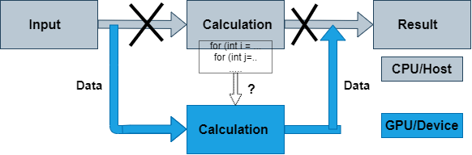

Introduction to OpenACC
Serial Computing on CPU

Porting to GPU

What is OpenACC ?
OpenACC defines a set of compiler directives that allow code regions to be offloaded from a host CPU to be computed on a GPU
High level GPU programming
Large similarity to OpenMP directives
Support for both C/C++ and Fortran bindings
Extensive guides, tutorials, code samples and documentation on the OpenACC standard can be found at www.openacc.org.
OpenACC vs. CUDA or HIP
How to port code to GPU with OpenACC?
Compilers that support OpenACC usually require an option that enables the feature
PGI (now NVIDIA HPC SDK):
-accCray:
-haccGNU (partial support):
-fopenaccWithout these options a regular CPU version is compiled!
OpenACC data model
host manages memory of the device
host copies data to/from the device
OpenACC execution model
Host-directed execution with an attached accelerator
Part of the program is usually executed by the host
Computationally intensive parts are offloaded to the accelerator that executes parallel regions
OpenACC directive syntax
sentinel |
construct |
clauses |
||
|---|---|---|---|---|
C/C++ |
|
|
|
|
|
|
|||
|
||||
|
||||
Fortran |
|
|
|
|
|
|
|||
|
||||
|
OpenACC uses compiler directives for defining compute regions (and data transfers) that are to be performed on a GPU
Important constructs
parallel,kernels,data,loop,update,host_data,wait
Often used clauses
if (condition),async(handle)
OpenACC data model
Define a region with data declared in the device memory
C/C++:
#pragma acc data [clauses]Fortran:
!$acc data [clauses]clauses can be
copy,copyin,copyout, andpresentcopy(var-list)on entry: if data is present on the device on entry, behave as with the present clause, otherwise allocate memory on the device and copy data from the host to the device. on exit: copy data from the device to the host and deallocate memory on the device if it was allocated on entrycopyin(var-list)on entry: same as copy on entry, on exit: deallocate memory on the device if it was allocated on entrycopyout(var-list)on entry: if data is present on the device on entry, behave as with the present clause, otherwise allocate memory on the device on exit: same as copy on exitpresent(var-list)on entry/exit: assume that memory is allocated and that data is present on the devicecreate(var-list)on entry: allocate memory on the device, unless it was already present, on exit: deallocate memory on the device if it was allocated on entryreduction(operator:var-list)the operator can be+,-,*,max,min, Performs reduction on the (scalar) variables in list
Data transfers take place
from the host to the device upon entry to the region
from the device to the host upon exit from the region
Functionality defined by data clauses
Data clauses can also be used in
kernelsandparallelconstructs
Data specification
Data clauses specify functionality for different variables
Overlapping data specifications are not allowed
For array data, array ranges can be specified
C/C++:
arr[start_index:length], for instancevec[0:n]Fortran:
arr(start_index:end_index), for instancevec(1:n)
Note: array data must be contiguous in memory (vectors, multidimensional arrays etc.)
Default data environment in compute constructs
All variables used inside the
parallelorkernelsregion will be treated as implicit variables if they are not present in any data clauses, i.e. copying to and from the device is automatically performedImplicit array variables are treated as having the
copyclause in both casesImplicit scalar variables are treated as having the
copyclause inkernelsfirstprivateclause inparallel
Unstructured data regions
Unstructured data regions enable one to handle cases where allocation and freeing is done in a different scope
Useful for e.g. C++ classes, Fortran modules
enter datadefines the start of an unstructured data regionC/C++:
#pragma acc enter data [clauses]Fortran:
!$acc enter data [clauses][clauses] can be
create(var-list)to allocate memory on the device orcopyin(var-list)to allocate memory on the device and copy data from the host to the device
exit datadefines the end of an unstructured data regionC/C++:
#pragma acc exit data [clauses]Fortran:
!$acc exit data [clauses][clauses] can be
delete(var-list)to deallocate memory on the device orcopyout(var-list)to Deallocate memory on the device and copy data from the device to the host
Data directive: update
Define variables to be updated within a data region between host and device memory
C/C++:
#pragma acc update [clauses]Fortran:
!$acc update [clauses]
Data transfer direction controlled by
host(var-list)ordevice(var-list)clausesself(host) clause updates variables from device to hostdeviceclause updates variables from host to device
updateis a single line executable directiveUseful for producing snapshots of the device variables on the host or for updating variables on the device
Pass variables to host for visualization
Communication with other devices on other computing nodes
Often used in conjunction with
Asynchronous execution of OpenACC constructs
Unstructured data regions
Data directive: declare
Makes a variable resident in accelerator memory
Added at the declaration of a variable
Data life-time on device is the implicit life-time of the variable
C/C++:
#pragma acc declare [clauses]Fortran:
!$acc declare [clauses]
Supports usual data clauses, and additionally
device_residentlink
OpenACC execution model
OpenACC includes two different approaches for defining parallel regions
paralleldefines a region to be executed on an accelerator. Work sharing parallelism has to be defined manually. Good tuning prospects.kernelsdefines a region to be transferred into a series of kernels to be executed in sequence on an accelerator. Work sharing parallelism is defined automatically for the separate kernels, but tuning prospects limited.
With similar work sharing, both can perform equally well
Compute constructs: kernels
Define a region to be transferred to a sequence of kernels for execution on the accelerator device
C/C++:
#pragma acc kernels [clauses]Fortran:
!$acc kernels [clauses]
Each separate loop nest inside the region will be converted into a separate parallel kernel
The kernels will be executed in a sequential order
Compute constructs: parallel
Define a region to be executed on the accelerator device
C/C++:
#pragma acc parallel [clauses]Fortran:
!$acc parallel [clauses]
Without any work sharing constructs, the whole region is executed redundantly multiple times
Given a sequence of loop nests, each loop nest may be executed simultaneously
Work sharing construct: loop
- Define a loop to be parallelized
C/C++:
#pragma acc loop [clauses]Fortran:
!$acc loop [clauses]Must be followed by a C/C++ or Fortran loop construct
- Combined constructs with
parallelandkernels #pragma acc kernels loop / !$acc kernels loop#pragma acc parallel loop / !$acc parallel loop
- Combined constructs with
Similar in functionality to OpenMP
for/doconstructLoop index variables are
privatevariables by defaultaccel– operations related to the acceleratorall– print all compiler outputintensity– print loop computational intensity info
Examples:
const int N=100;
#pragma acc data copy(a[0:N])
{
#pragma acc parallel loop present(a)
for (int i=0; i<N; i++)
a[i] = a[i] + 1;
}
...
#pragma acc data copyout(a[0:N]), copyin(b[0:N])
{
#pragma acc parallel loop present(a,b)
for (int i=0; i<N; i++)
a[i] = b[i] + 1;
}
...
#pragma acc data copyout(a[0:N]), create(b[0:N])
{
#pragma acc parallel loop
for (int i=0; i<N; i++)
b[i] = i * 2.0;
#pragma acc parallel loop present(a,b)
for (int i=0; i<N; i++)
a[i] = b[i] + 1;
}
Keypoints
OpenACC is an directive-based extension to C/Fortran programming languages for accelerators
Compute constructs: data, parallel and kernels